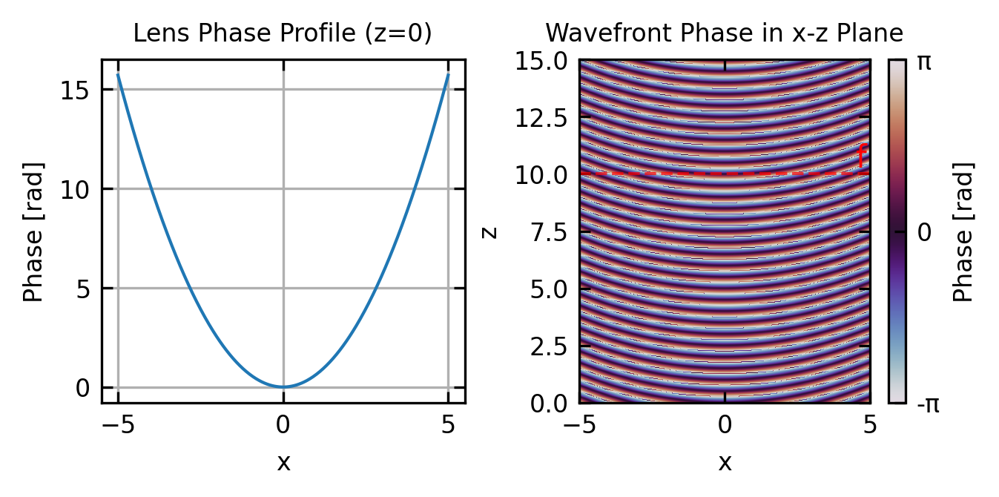
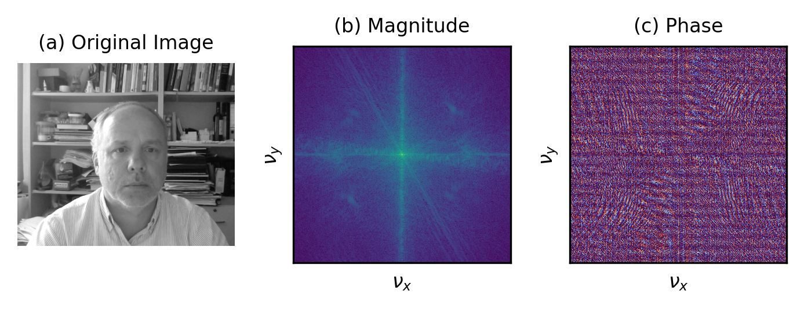
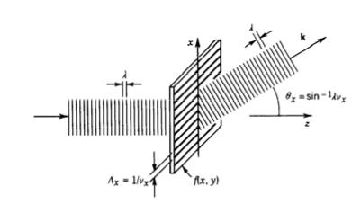
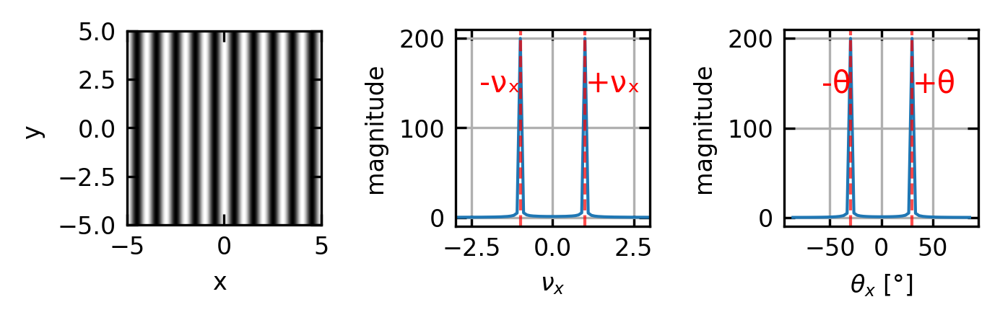

Fourier optics offers a robust analytical approach to understanding light propagation through optical systems by employing Fourier analysis techniques on optical fields. This framework elegantly connects image formation and optical resolution to the transmission of spatial information via light waves. Our exploration begins with examining complex transmittance functions, which give us fundamental insights into how various samples shape optical wavefronts. From this foundation, we will progress to the essential principles of Fourier optics and the associated diffraction integrals.
Transmission
When light interacts with an optical component or object, its amplitude and phase can be modified. Following Saleh and Teich’s formalism, we can characterize this interaction using the complex transmission factor \(t(x,y)\), which is defined as the ratio of the output field amplitude to the input field amplitude at each point \((x,y)\) in a plane:
This transmission factor is generally complex-valued, with its magnitude representing amplitude modulation and its phase representing phase modulation of the incident light.
For a thin lens, the primary effect is phase modulation. To derive the transmission function for a thin lens, we need to consider the optical path length through the lens at each point. Consider a planoconvex lens with one flat surface and one spherical surface of radius \(R\). The thickness of the lens varies with position according to:
\[d(x,y) = d_0 - \frac{(x^2+y^2)}{2R}\]
where \(d_0\) is the thickness at the center. As light passes through the lens, it experiences a phase delay proportional to the optical path length, which is the product of the refractive index \(n\) and the physical path length:
\[\phi(x,y) = k \cdot n \cdot d(x,y) - k \cdot d(x,y)_{\text{air}}\]
where \(k = 2\pi/\lambda\) is the wavenumber. Simplifying:
The first term represents a constant phase shift that we can ignore, and the second term gives us the position-dependent phase modulation. For a lens with focal length \(f\), the relationship between \(R\) and \(f\) is given by the lensmaker’s formula, which for a planoconvex lens simplifies to:
This quadratic phase factor represents the position-dependent phase delay introduced by the lens, with greater delays at the thicker portions of the lens.
Code
# Parameterswavelength =0.5# arbitrary unitsk =2*np.pi/wavelengthf =10# focal lengthx = np.linspace(-5, 5, 400)z = np.linspace(0, 15, 400)X, Z = np.meshgrid(x, z)# Calculate the phase profile at the lens (z=0)# Using positive sign to make the phase retardation largest at the center (x=0)lens_phase = k*(x**2)/(2*f)# Calculate the phase in the x-z plane after the lens# For each z position, the phase evolves according to the wave equationphase_xz = np.zeros_like(X)for i, z_val inenumerate(z):if z_val ==0:# At z=0, the phase is just the lens phase profile phase_xz[i,:] = lens_phaseelse:# After the lens, we model the converging wavefront# The phase at each point is approximately:# φ(x,z) = k*((x²/(2f)) - z) for a converging wave# Negative sign for z to represent forward propagation phase_xz[i,:] = k*((X[i,:]**2)/(2*f) - z_val)# Wrap phase to [-π,π] for visualizationphase_xz_wrapped = np.angle(np.exp(1j*phase_xz))# Create figure with two subplotsfig, ax = plt.subplots(1, 2, figsize=get_size(12,6))# Plot the phase profile at the lens (z=0)ax[0].plot(x, lens_phase)ax[0].set_xlabel('x')ax[0].set_ylabel('Phase [rad]')ax[0].set_title('Lens Phase Profile (z=0)')ax[0].grid(True)# Plot the phase in the x-z plane after the lensim = ax[1].imshow(phase_xz_wrapped, extent=[x.min(), x.max(), z.min(), z.max()], origin='lower', cmap='twilight', aspect='auto')ax[1].set_xlabel('x')ax[1].set_ylabel('z')ax[1].set_title('Wavefront Phase in x-z Plane')ax[1].axhline(y=f, color='r', linestyle='--', alpha=0.7)ax[1].text(x.max()-0.5, f+0.3, 'f', color='red')# Add a colorbarcbar = fig.colorbar(im, ax=ax[1], ticks=[-np.pi, 0, np.pi])cbar.set_label('Phase [rad]')cbar.ax.set_yticklabels(['-π', '0', 'π'])plt.tight_layout()plt.show()

Figure 1— Phase modulation effect of a thin lens on an incident plane wave. (a) The quadratic phase profile introduced by the lens at z=0. (b) The wavefront shape in the x-z plane after passing through the lens, showing how the initially flat wavefront is transformed into a converging spherical wavefront.
This transmission function is crucial in Fourier optics as it allows us to mathematically model how a lens transforms an incident field. When placed in the path of a light wave, the lens modifies the wavefront according to this transmission factor, effectively performing a spatial Fourier transform of the input field at its focal plane.
Generalization to Arbitrary Thickness Objects
For arbitrary thickness objects, we can extend our treatment beyond the thin-element approximation. When light propagates through a medium of varying thickness and refractive index, the transmission function becomes:
\[t(x,y) = A(x,y) e^{j\phi(x,y)}\]
where \(A(x,y)\) represents amplitude modulation (absorption or gain) and \(\phi(x,y)\) represents phase modulation. For a thick object, the phase shift is given by the path integral through the object:
\[\phi(x,y) = k \int_\text{path} [n(x,y,z) - n_0] dz\]
where \(n(x,y,z)\) is the spatially varying refractive index within the object, \(n_0\) is the refractive index of the surrounding medium, and the integration is performed along the light path through the object.
This formulation accounts for complex three-dimensional objects where both the thickness and the refractive index may vary with position. For inhomogeneous media, we can express the transmission function as:
where \(\alpha(x,y)\) is the absorption coefficient integrated along the path, and \(d(x,y)\) is the thickness at position \((x,y)\).
For many practical applications, this can be approximated by considering the effective phase and amplitude changes, leading to the more manageable form:
\[t(x,y) = \tau(x,y) e^{jk(n-n_0)d(x,y)}\]
where \(\tau(x,y)\) is the amplitude transmission coefficient accounting for reflection and absorption losses.
This mathematical framework will become crucially important later when we describe image formation from waves that have propagated through an object. The transmission function directly encodes how an object modifies both the amplitude and phase of the incident light field, which determines how the object appears in an imaging system. Different imaging modalities (such as bright-field, phase-contrast, or differential interference contrast microscopy) essentially measure different aspects of this complex transmission function, revealing different properties of the object being imaged.
Wave Propagation Through Objects
When a plane wave propagating along the z-axis encounters an object, its wavefronts are modified according to the object’s transmission function. This section explores how different types of objects transform incident wavefronts, which is fundamental to understanding phenomena from simple refraction to complex wavefront shaping.
Code
# Parameterswavelength =0.5# arbitrary unitsk =2*np.pi/wavelengthx = np.linspace(-5, 5, 400)z = np.linspace(0, 15, 400)X, Z = np.meshgrid(x, z)# Create figure with four subplotsfig, ax = plt.subplots(2, 2, figsize=get_size(12,12))ax = ax.flatten()# (a) Plane wave in free space - flat wavefrontsphase_free_space = k*Zphase_free_space_wrapped = np.angle(np.exp(1j*phase_free_space))im1 = ax[0].imshow(phase_free_space_wrapped, extent=[x.min(), x.max(), z.min(), z.max()], origin='lower', cmap='twilight', aspect='auto')ax[0].set_xlabel('x')ax[0].set_ylabel('z')ax[0].set_title('(a) Free Space Propagation')# (b) Converging lens - spherical wavefrontsf =10# focal lengthlens_phase = np.zeros_like(X)for i, z_val inenumerate(z):if z_val <0.1: # At z=0, apply lens phase lens_phase[i,:] = k*(x**2)/(2*f)else:# After the lens, we model spherical wavefronts converging to focal point lens_phase[i,:] = k*((X[i,:]**2)/(2*f) - z_val)lens_phase_wrapped = np.angle(np.exp(1j*lens_phase))im2 = ax[1].imshow(lens_phase_wrapped, extent=[x.min(), x.max(), z.min(), z.max()], origin='lower', cmap='twilight', aspect='auto')ax[1].set_xlabel('x')ax[1].set_ylabel('z')ax[1].set_title('(b) Converging Lens')ax[1].axhline(y=f, color='r', linestyle='--', alpha=0.7)ax[1].text(x.max()-0.5, f+0.3, 'f', color='red')# (c) Prism - tilted wavefrontstilt_angle =10# degreesprism_phase = np.zeros_like(X)for i, z_val inenumerate(z):if z_val <0.1: # At z=0, apply linear phase (prism) prism_phase[i,:] = k*np.tan(np.deg2rad(tilt_angle))*xelse:# After the prism, wavefronts are tilted prism_phase[i,:] = k*(np.tan(np.deg2rad(tilt_angle))*x + z_val/np.cos(np.deg2rad(tilt_angle)))prism_phase_wrapped = np.angle(np.exp(1j*prism_phase))im3 = ax[2].imshow(prism_phase_wrapped, extent=[x.min(), x.max(), z.min(), z.max()], origin='lower', cmap='twilight', aspect='auto')ax[2].set_xlabel('x')ax[2].set_ylabel('z')ax[2].set_title('(c) Prism')# (d) Arbitrary phase object - custom wavefrontsdef arbitrary_phase(x):return2*np.sin(x) +0.5*np.sin(3*x)arb_phase = np.zeros_like(X)for i, z_val inenumerate(z):if z_val <0.1: # At z=0, apply arbitrary phase arb_phase[i,:] = k*arbitrary_phase(x)else:# After the object, wavefronts are deformed# This is a simplified model that propagates the phase deformation arb_phase[i,:] = k*(arbitrary_phase(x) + z_val)arb_phase_wrapped = np.angle(np.exp(1j*arb_phase))im4 = ax[3].imshow(arb_phase_wrapped, extent=[x.min(), x.max(), z.min(), z.max()], origin='lower', cmap='twilight', aspect='auto')ax[3].set_xlabel('x')ax[3].set_ylabel('z')ax[3].set_title('(d) Arbitrary Phase Object')# Add a colorbar for reference#cbar = fig.colorbar(im1, ax=ax, ticks=[-np.pi, 0, np.pi], orientation='horizontal', pad=0.02)#cbar.set_label('Phase [rad]')#cbar.ax.set_xticklabels(['-π', '0', 'π'])plt.tight_layout()plt.show()
Figure 2— Wavefront propagation after transmission through different optical elements. (a) A plane wave passing through free space maintains flat wavefronts. (b) After passing through a converging lens, the wavefronts become spherical, converging toward the focal point. (c) Transmission through a prism tilts the wavefronts, changing the propagation direction. (d) A phase plate with arbitrary phase profile creates custom-shaped wavefronts.
The wavefront visualizations above illustrate how different optical elements transform an incident plane wave:
Free Space Propagation: In the absence of any optical element, a plane wave maintains flat wavefronts perpendicular to the propagation direction.
Lens Effect: A converging lens introduces a quadratic phase modulation, transforming plane wavefronts into converging spherical wavefronts that focus at the focal point.
Prism Effect: A prism applies a linear phase gradient across the wavefront, tilting the wavefronts and changing the propagation direction according to Snell’s law.
Arbitrary Phase Objects: More complex phase profiles create correspondingly complex wavefront shapes, which can be designed for specific applications like wavefront correction or beam shaping.
Understanding these wavefront transformations is essential in optical system design, as the shape of the wavefront directly determines how light propagates through subsequent optical elements and ultimately forms images or interference patterns.
Spatial Frequencies and Angular Spectrum
Building on our analysis of wave propagation through various optical elements, we now explore a fundamental concept in Fourier optics that connects spatial patterns to wave propagation directions. This relationship between spatial structure and angular distribution is a direct extension of how different optical elements transform wavefronts, as visualized in the previous section. Just as a lens converts a plane wave into a converging spherical wave and a prism tilts the wavefront to change the propagation direction, complex spatial patterns decompose into multiple propagation directions—a relationship that will become essential when we discuss optical imaging systems, diffraction limits, and the resolution capabilities of microscopes and telescopes.
Code
# Load and display a sample image with different spatial frequenciesfrom PIL import Imageimport matplotlib.pyplot as pltimport numpy as np# Load image and convert to grayscaleimg = plt.imread('img/frank.png')iflen(img.shape) >2: img_gray = np.mean(img, axis=2) # Convert RGB to grayscaleelse: img_gray = img# Compute 2D FFTimg_fft = np.fft.fftshift(np.fft.fft2(img_gray))freq_x = np.fft.fftshift(np.fft.fftfreq(img_gray.shape[1]))freq_y = np.fft.fftshift(np.fft.fftfreq(img_gray.shape[0]))# Create figure for original image and its Fourier transformfig, ax = plt.subplots(1, 3, figsize=get_size(12, 5))# Display original imageax[0].imshow(img_gray, cmap='gray')ax[0].set_title('(a) Original Image')ax[0].set_axis_off()# Display 2D FFT magnitudeax[1].imshow(np.log(np.abs(img_fft) +1), cmap='viridis', extent=[freq_x.min(), freq_x.max(), freq_y.min(), freq_y.max()])ax[1].set_title('(b) Magnitude')ax[1].set_xlabel(r'$\nu_x$')ax[1].set_ylabel(r'$\nu_y$')ax[1].set_xticks([])ax[1].set_yticks([])# Display 2D FFT phaseax[2].imshow(np.angle(img_fft), cmap='twilight', extent=[freq_x.min(), freq_x.max(), freq_y.min(), freq_y.max()])ax[2].set_title('(c) Phase')ax[2].set_xlabel(r'$\nu_x$')ax[2].set_ylabel(r'$\nu_y$')ax[2].set_xticks([])ax[2].set_yticks([])plt.tight_layout()plt.show()

Figure 3— Spatial frequency analysis of an image. (a) Original grayscale image. (b) Magnitude of the 2D Fourier transform, showing the distribution of spatial frequencies. (c) Phase of the Fourier transform.
The Concept of Spatial Frequencies
Just as a temporal signal can be decomposed into frequency components through Fourier analysis, a spatial pattern or object can be represented as a superposition of spatial harmonic functions with different spatial frequencies. The spatial frequency represents how rapidly the intensity or phase of an optical field changes with distance.
For a two-dimensional complex spatial harmonic function:
\[f(x,y) = A e^{j2\pi(\nu_x x + \nu_y y)}\]
where:
\(\nu_x\) and \(\nu_y\) are the spatial frequencies in the x and y directions (in cycles per unit length)
\(A\) is the complex amplitude
Higher spatial frequencies correspond to finer details in an object, while lower spatial frequencies represent coarser features.
Correspondence to Plane Wave Angular Components
One of the most profound insights in Fourier optics is the relationship between spatial frequencies and the angular spectrum of plane waves. To understand this relationship, consider a plane wave with wavevector \(\mathbf{k}\) and wavelength \(\lambda\) incident on the plane \(z=0\). The wavevector can be written as:
where \(|\mathbf{k}| = 2\pi/\lambda\). The components of this wavevector can be expressed in terms of the propagation angles \(\theta_x\) and \(\theta_y\) (with respect to the \(z\)-axis):
where \(\cos\theta_z = \sqrt{1-\sin^2\theta_x-\sin^2\theta_y}\) from the constraint that \(|\mathbf{k}| = 2\pi/\lambda\).

Figure 4— Principle of plane wave angular decomposition. (Image taken from Saleh/Teich “Principles of Photonics”)
At the plane \(z=0\), this plane wave can be represented as:
\[U(x,y,0) = U_0 e^{j(k_x x + k_y y)} = U_0 e^{j2\pi(\nu_x x + \nu_y y)}\]
where \(\nu_x = \sin\theta_x/\lambda\) and \(\nu_y = \sin\theta_y/\lambda\) are the spatial frequencies. This equation shows that a plane wave propagating at angles \(\theta_x\) and \(\theta_y\) manifests as a spatial harmonic function at the \(z=0\) plane, with spatial frequencies directly related to the propagation angles:
This expression for \(k_z\) shows how the propagation along the z-direction depends on the spatial frequencies in the x and y directions.
This relationship provides a direct connection between the spatial structure of an object and the directions in which light propagates after interacting with it. We saw this principle in action when analyzing diffraction gratings, where we decomposed the grating’s periodic structure into angular components using the grating vector. For a grating with period \(d\), the spatial frequency is \(\nu_x = 1/d\), and the directions of diffracted orders are given by:
\[\sin\theta_m = m\lambda/d = m\lambda\nu_x\]
where \(m\) is the diffraction order. This shows how the grating’s spatial frequency determines the angles of diffracted light, which is a specific application of the more general Fourier relationship between spatial frequencies and propagation angles.
Code
# Create a 2D object with a single spatial frequency in the x directionx = np.linspace(-5, 5, 400)y = np.linspace(-5, 5, 400)X, Y = np.meshgrid(x, y)# Define the spatial frequencyspatial_freq =1.0# cycles per unit lengthwavelength =0.5# arbitrary units# Create the sinusoidal pattern objectobject_pattern = np.cos(2* np.pi * spatial_freq * X)# Calculate the corresponding diffraction anglediffraction_angle = np.rad2deg(np.arcsin(wavelength * spatial_freq))# Calculate the 1D FFT of a single row of the object (at y=0)row_index =len(y) //2# Middle rowobject_row = object_pattern[row_index, :]ft_1d = np.fft.fftshift(np.fft.fft(object_row))ft_magnitude_1d = np.abs(ft_1d)# Create frequency axis for the 1D Fourier transformfx = np.fft.fftshift(np.fft.fftfreq(len(x), x[1]-x[0]))# Calculate the corresponding diffraction anglestheta_x = np.rad2deg(np.arcsin(np.clip(wavelength * fx, -1, 1)))# Create a figure with 3 subplotsfig, axs = plt.subplots(1, 3, figsize=get_size(12, 4))# Plot the object pattern (2D image)im0 = axs[0].imshow(object_pattern, extent=[x.min(), x.max(), y.min(), y.max()], cmap='gray', origin='lower')axs[0].set_xlabel('x ')axs[0].set_ylabel('y ')#fig.colorbar(im0, ax=axs[0], label='Amplitude')# Plot the spatial frequency spectrum (1D line plot)axs[1].plot(fx, ft_magnitude_1d)axs[1].set_xlabel(r'$\nu_x$')axs[1].set_ylabel('magnitude')axs[1].set_xlim(-3, 3)axs[1].grid(True)axs[1].axvline(x=spatial_freq, color='r', linestyle='--', alpha=0.7)axs[1].axvline(x=-spatial_freq, color='r', linestyle='--', alpha=0.7)axs[1].text(spatial_freq, 0.7*np.max(ft_magnitude_1d), f"+νₓ", color='red', ha='left')axs[1].text(-spatial_freq, 0.7*np.max(ft_magnitude_1d), f"-νₓ", color='red', ha='right')# Plot the angular spectrum representation (1D line plot)# Only display points where |fx| < 1/wavelength (propagating waves)valid_indices = np.abs(fx) <=1/wavelengthaxs[2].plot(theta_x[valid_indices], ft_magnitude_1d[valid_indices])axs[2].set_xlabel(r'$\theta_x$[°]')axs[2].set_ylabel('magnitude')axs[2].grid(True)axs[2].axvline(x=diffraction_angle, color='r', linestyle='--', alpha=0.7)axs[2].axvline(x=-diffraction_angle, color='r', linestyle='--', alpha=0.7)axs[2].text(diffraction_angle, 0.7*np.max(ft_magnitude_1d[valid_indices]), f"+θ", color='red', ha='left')axs[2].text(-diffraction_angle, 0.7*np.max(ft_magnitude_1d[valid_indices]), f"-θ", color='red', ha='right')plt.tight_layout()plt.show()

Figure 5— Visualization of a 2D object containing a single spatial frequency in the x-direction. (a) The object pattern showing sinusoidal variation along x with frequency νₓ. (b) The Fourier transform magnitude of the object, showing two symmetric points corresponding to ±νₓ. (c) The corresponding angular spectrum representation, where the spatial frequency νₓ maps to specific diffraction angles ±θ according to sin(θ) = λνₓ.
Fourier Transform Review
Basic Definitions
The Fourier transform decomposes a function into its constituent frequencies. For a function \(f(x)\), its Fourier transform \(F(k)\) is defined as:
In optics, \(x\) typically represents spatial coordinates and \(k\) represents spatial frequencies. When working with discrete data, as you will in your computational exercises, you’ll use the Discrete Fourier Transform (DFT), which is efficiently computed using the Fast Fourier Transform (FFT) algorithm:
Code
import numpy as npfrom scipy import fftpack# Generate a simple signalx = np.linspace(0, 1, 1000) # spatial coordinatef = np.sin(2*np.pi*5*x) +0.5*np.sin(2*np.pi*10*x) # signal with 5 Hz and 10 Hz components# Compute the FFTF = fftpack.fft(f)freqs = fftpack.fftfreq(len(x), x[1]-x[0]) # frequency coordinates# For display, often use fftshift to center the zero frequencyF_shifted = fftpack.fftshift(F)freqs_shifted = fftpack.fftshift(freqs)# Plot the original signal and its spectrumplt.figure(figsize=get_size(12, 5))plt.subplot(121)plt.plot(x, f)plt.xlabel('position x')plt.ylabel('amplitude')plt.title('original signal')plt.subplot(122)plt.plot(freqs_shifted, np.abs(F_shifted))plt.xlabel('spatial frequency k')plt.ylabel('magnitude |F(k)|')plt.title('fourier spectrum')plt.xlim(-20, 20) # Zoom in on relevant frequenciesplt.tight_layout()plt.show()
This means the Fourier transform of a sum is the sum of the Fourier transforms, allowing us to analyze complex signals by breaking them into simpler components.
A shift in the spatial domain corresponds to a phase change in the frequency domain, critical for understanding how optical elements that cause phase shifts affect the spectrum.
Convolution in the spatial domain becomes multiplication in the frequency domain. This is particularly useful in optics, where the effect of a lens or aperture can be modeled as a convolution operation.
This theorem establishes energy conservation between domains, showing that the total energy in a signal is preserved in its Fourier transform.
Common Fourier Transform Pairs
Function
Fourier Transform
\(\delta(x)\) (Delta function)
\(1\) (constant)
\(1\) (constant)
\(\delta(k)\) (Delta function)
\(\text{rect}(x)\) (Rectangle function)
\(\text{sinc}(k)\) (Sinc function)
\(e^{-\pi x^2}\) (Gaussian)
\(e^{-\pi k^2}\) (Gaussian)
\(\cos(2\pi ax)\)
\(\frac{1}{2}[\delta(k-a) + \delta(k+a)]\)
Understanding these transform pairs is essential for optical analysis. For example, a rectangular aperture produces a sinc-function diffraction pattern, and a Gaussian beam maintains its Gaussian profile under propagation.
Code
# Demonstrate the rect-sinc transform pairdef rect(x, width=1.0):return np.where(np.abs(x) <= width/2, 1.0, 0.0)def sinc(k):# Handle the case where k=0 directly to avoid division by zero warning result = np.ones_like(k, dtype=float) non_zero = k !=0 result[non_zero] = np.sin(np.pi * k[non_zero]) / (np.pi * k[non_zero])return result# Create a rectangular functionx_fine = np.linspace(-5, 5, 1000)rect_func = rect(x_fine, width=2.0)# Calculate its Fourier transformrect_ft = fftpack.fftshift(fftpack.fft(rect_func))k_values = fftpack.fftshift(fftpack.fftfreq(len(x_fine), x_fine[1]-x_fine[0]))# Also plot the analytical sinc function for comparisontheoretical_sinc =2.0* sinc(2.0*k_values)plt.figure(figsize=get_size(12, 5))plt.subplot(121)plt.plot(x_fine, rect_func)plt.xlabel('position x')plt.title('rectangle function')plt.subplot(122)plt.plot(k_values, np.abs(rect_ft)/np.max(np.abs(rect_ft)), 'b-', label='FFT Result')plt.plot(k_values, np.abs(theoretical_sinc), 'r--', label='Theoretical Sinc')plt.xlabel('spatial frequency k')plt.xlim(-2, 2)plt.tight_layout()plt.show()
Spatial Spectral Analysis
Corresponding to our previous analysis, the angular spectrum representation can be formalized using Fourier analysis. The complex amplitude transmittance \(f(x,y)\) can be written as a Fourier transform
\[f(x,y)=\iint_{-\infty}^{\infty} F(\nu_x,\nu_y) e^{j2\pi(\nu_x x + \nu_y y)}d\nu_x d\nu_y\]
where \(F(\nu_x,\nu_y)\) give the amplitudes of the frequency components of the transmittance. With our previous expression, then the field at any plane \(z\) can be obtained by:
where \(k_z = 2\pi\sqrt{(1/\lambda)^2 - \nu_x^2 - \nu_y^2}\) is the z-component of the wavevector.
This formulation shows that the field at any distance \(z\) can be calculated by multiplying each spatial frequency component by the appropriate phase factor \(e^{-jk_z z}\) and then performing an inverse Fourier transform. This approach provides an elegant and computationally efficient method for modeling wave propagation, particularly in homogeneous media.
For propagating waves, where \(\nu_x^2 + \nu_y^2 < (1/\lambda)^2\), the factor \(e^{-jk_z z}\) represents a phase shift. For evanescent waves, where \(\nu_x^2 + \nu_y^2 > (1/\lambda)^2\), \(k_z\) becomes imaginary, resulting in exponential decay with distance.
Transfer Function of Free space
We now examine the propagation of a monochromatic optical wave of wavelength \(\lambda\) and complex amplitude \(U(x, y, z)\) in the free space between the planes \(z=0\) and \(z=d\), called the input and output planes, respectively. Given the complex amplitude of the wave at the input plane, \(f(x, y)=U(x, y, 0)\), we want to determine the complex amplitude at the output plane, \(g(x, y)=U(x, y, d)\).
The input field \(f(x,y)\) propagates through free space to form the output field \(g(x,y)\). Using the angular spectrum representation, we can express the relationship between input and output as:
where \(F(\nu_x,\nu_y)\) is the Fourier transform of \(f(x,y)\), and \(k_z = 2\pi\sqrt{(1/\lambda)^2 - \nu_x^2 - \nu_y^2}\) is the z-component of the wavevector.
The transfer function of free space, denoted as \(H(\nu_x,\nu_y)\), is defined as the ratio of the output spectrum to the input spectrum:
This transfer function has two distinct regimes based on the values of \(\nu_x\) and \(\nu_y\):
Propagating waves: When \(\nu_x^2 + \nu_y^2 < (1/\lambda)^2\), \(k_z\) is real, and \(H(\nu_x,\nu_y) = e^{-jk_z d}\) represents a pure phase shift. These are propagating waves that carry energy from the input to the output plane.
Evanescent waves: When \(\nu_x^2 + \nu_y^2 > (1/\lambda)^2\), \(k_z\) becomes imaginary, and \(H(\nu_x,\nu_y) = e^{-|k_z| d}\) represents an exponential decay. These evanescent waves decay exponentially with distance and do not propagate energy to the far field. For spatial frequencies slightly beyond the propagating limit, where \(\nu_x^2 + \nu_y^2 \approx (1/\lambda)^2 + \Delta\), the decay constant can be approximated as \(|k_z| \approx 2\pi\sqrt{\Delta} \approx \pi\lambda/(2d^2)\), where \(d\) is the characteristic distance from the object. This means that features with spatial frequencies significantly above \(1/\lambda\) become effectively undetectable at distances greater than a few wavelengths.
Code
# Parameterswavelength =0.5# wavelength in arbitrary unitsz_distances = [.2] # distances for transfer function calculationnu_x = np.linspace(-3/wavelength, 3/wavelength, 1000) # spatial frequency rangenu_y =0# setting nu_y = 0 for a 1D plot along nu_x# Calculate the magnitude of the transfer function for different z valuesH_mags = []for d in z_distances:# Calculate k_z based on spatial frequencies k_z_squared = (1/wavelength)**2- nu_x**2- nu_y**2# Initialize transfer function array H = np.ones_like(nu_x, dtype=complex)# For propagating waves (real k_z) prop_mask = k_z_squared >=0 k_z_prop = np.sqrt(k_z_squared[prop_mask]) H[prop_mask] = np.exp(-1j*2* np.pi * k_z_prop * d)# For evanescent waves (imaginary k_z) evan_mask = k_z_squared <0 k_z_evan = np.sqrt(-k_z_squared[evan_mask]) H[evan_mask] = np.exp(-2* np.pi * k_z_evan * d)# Store the magnitude H_mags.append(np.abs(H))# Plot the magnitude of the transfer functionplt.figure(figsize=get_size(8, 6))for i, d inenumerate(z_distances): plt.plot(nu_x*wavelength, H_mags[i], label=f'z = {d}')plt.axvline(x=-1, color='k', linestyle='--', alpha=0.5)plt.axvline(x=1, color='k', linestyle='--', alpha=0.5)plt.text(-1.1, 0.5, '-1/λ', fontsize=8)plt.text(0.9, 0.5, '1/λ', fontsize=8)plt.xlabel(r' spatial frequency $(\nu_x·\lambda)$')plt.ylabel(r'$|H(\nu_x, 0)|$')#plt.legend()plt.ylim(0, 1.1)plt.tight_layout()plt.show()
Figure 6— The magnitude of the free-space transfer function. For propagating waves (ν_x² + ν_y² < 1/λ²), the transfer function has magnitude 1, representing pure phase delay. For evanescent waves (ν_x² + ν_y² > 1/λ²), the magnitude decays exponentially with distance from the origin.
Code
# Parameterswavelength =0.5# wavelength in arbitrary unitsz_distances = [0.2] # different propagation distancesnu_x = np.linspace(-1/wavelength, 1/wavelength, 1000) # spatial frequency range (propagating waves only)nu_y =0# setting nu_y = 0 for a 1D plot along nu_x# Calculate the phase of the transfer function for different z valuesH_phases = []for d in z_distances:# Calculate k_z for propagating waves only k_z =2* np.pi * np.sqrt((1/wavelength)**2- nu_x**2- nu_y**2)# Calculate the phase (negative argument of the transfer function) phase = k_z * d# Store the phase H_phases.append(phase)# Plot the phase of the transfer functionplt.figure(figsize=get_size(8, 6))for i, d inenumerate(z_distances): plt.plot(nu_x*wavelength, H_phases[i], label=f'z = {d}')plt.xlabel(r' spatial frequency $(\nu_x·\lambda)$')plt.ylabel(r'phase $\phi(\nu_x, 0)$[rad]')plt.xlim(-3,3)plt.tight_layout()plt.show()
Figure 7— The phase of the free-space transfer function. For propagating waves (ν_x² + ν_y² < 1/λ²), the transfer function introduces a phase delay that increases with spatial frequency. This phase represents the wavefront curvature during propagation.
This description of free space propagation provides insight into important phenomena such as:
Diffraction limits: Spatial frequencies beyond \(1/\lambda\) correspond to evanescent waves that decay exponentially with distance, explaining why sub-wavelength features cannot be observed in the far field.
Resolution limits: An optical system with a maximum acceptance angle \(\theta_{max}\) can only capture spatial frequencies up to \(\sin\theta_{max}/\lambda\), limiting the finest details that can be resolved.
Spatial filtering: Optical components like apertures and lenses act as spatial filters, selectively transmitting or modifying certain spatial frequency components.
Amplitude Modulation
Let’s examine how spatial amplitude modulation affects the angular propagation of light. Consider a transparency with complex amplitude transmittance \(f_0(x, y)\). If its Fourier transform \(F_0(\nu_x, \nu_y)\) extends over spatial frequency ranges \(\pm \Delta \nu_x\) and \(\pm \Delta \nu_y\) in the \(x\) and \(y\) directions, the transparency will deflect an incident plane wave by angles \(\theta_x\) and \(\theta_y\) within the ranges \(\pm \sin^{-1}(\lambda \Delta \nu_x)\) and \(\pm \sin^{-1}(\lambda \Delta \nu_y)\), respectively.
Now consider a second transparency with complex amplitude transmittance \(f(x, y) = f_0(x, y) e^{-j2\pi(\nu_{x0}x + \nu_{y0}y)}\), where \(f_0(x, y)\) varies slowly compared to the exponential carrier term, meaning \(\Delta \nu_x \ll \nu_{x0}\) and \(\Delta \nu_y \ll \nu_{y0}\). This represents an amplitude-modulated function with spatial carrier frequencies \(\nu_{x0}\) and \(\nu_{y0}\) and modulation function \(f_0(x, y)\). According to the shift property of the Fourier transform, the transform of \(f(x, y)\) is \(F_0(\nu_x - \nu_{x0}, \nu_y - \nu_{y0})\). The transparency will deflect a plane wave in directions centered around the angles \(\theta_{x0} = \sin^{-1}(\lambda\nu_{x0})\) and \(\theta_{y0} = \sin^{-1}(\lambda\nu_{y0})\). This behavior can be understood by viewing \(f(x, y)\) as a combination of the base transmittance \(f_0(x, y)\) with a phase grating having transmittance \(e^{-j2\pi(\nu_{x0}x + \nu_{y0}y)}\) that provides the angular deflection.
Code
# Set up the coordinate systemx = np.linspace(-5, 5, 500)y = np.linspace(-5, 5, 500)X, Y = np.meshgrid(x, y)# Parameterswavelength =0.5# arbitrary unitsnu_x0 =2.0# carrier spatial frequencytheta_x0 = np.rad2deg(np.arcsin(wavelength * nu_x0)) # corresponding angle# Create base pattern f₀(x,y) - using a Gaussian patternsigma =1.5f0 = np.exp(-(X**2+ Y**2)/(2*sigma**2))# Create carrier wavecarrier = np.exp(-1j*2*np.pi*nu_x0*X)# Create modulated patternf = f0 * carrier# Calculate 2D Fourier transformsF0 = np.fft.fftshift(np.fft.fft2(f0))F = np.fft.fftshift(np.fft.fft2(f))# Create frequency axesfreq_x = np.fft.fftshift(np.fft.fftfreq(len(x), x[1]-x[0]))freq_y = np.fft.fftshift(np.fft.fftfreq(len(y), y[1]-y[0]))# Create figure with 4 subplotsfig, axs = plt.subplots(2, 2, figsize=get_size(12, 12))axs = axs.flatten()# Plot the base pattern f₀(x,y)im0 = axs[0].imshow(f0, extent=[x.min(), x.max(), y.min(), y.max()], cmap='gray', origin='lower')axs[0].set_title('(a) Base Pattern f₀(x,y)')axs[0].set_xlabel('x')axs[0].set_ylabel('y')# Plot the carrier wave (real part)im1 = axs[1].imshow(np.real(carrier), extent=[x.min(), x.max(), y.min(), y.max()], cmap='gray', origin='lower')axs[1].set_title(f'(b) Carrier Wave: $e^{{-j2\\pi\\nu_{{x0}}x}}$')axs[1].set_xlabel('x')axs[1].set_ylabel('y')# Plot the modulated pattern (real part)im2 = axs[2].imshow(np.real(f), extent=[x.min(), x.max(), y.min(), y.max()], cmap='gray', origin='lower')axs[2].set_title('(c) Modulated Pattern f(x,y)')axs[2].set_xlabel('x')axs[2].set_ylabel('y')# Plot Fourier transforms (log magnitude to enhance visibility)# Plot along central row in frequency space (freq_y = 0)central_row =len(freq_y) //2axs[3].plot(freq_x, np.log(np.abs(F0[central_row, :]) +1), 'b-', label='F₀(ν)')axs[3].plot(freq_x, np.log(np.abs(F[central_row, :]) +1), 'r--', label='F(ν)')axs[3].set_title('(d) Fourier Transforms')axs[3].set_xlabel('Spatial Frequency ν_x')axs[3].set_ylabel('Log Magnitude')axs[3].legend()# Add markers to show the shift to ν₀axs[3].axvline(x=0, color='g', linestyle=':', alpha=0.7, label='Original Center')axs[3].axvline(x=nu_x0, color='m', linestyle=':', alpha=0.7, label=f'Shifted Center (ν₀={nu_x0})')axs[3].text(nu_x0 +0.1, axs[3].get_ylim()[1]*0.9, f'θ₀={theta_x0:.1f}°', color='m')# Limit frequency axis for better visibilityaxs[3].set_xlim(-5, 5)plt.tight_layout()plt.show()
Figure 8— Visualization of amplitude modulation and the corresponding angular deflection. (a) The base pattern f₀(x,y) - a Gaussian envelope. (b) A carrier wave with spatial frequency ν₀. (c) The amplitude-modulated pattern f(x,y)=f₀(x,y)e^(-j2πν₀x). (d) Fourier transforms showing how the spectrum shifts with modulation, corresponding to angular deflection.
This principle enables spatial-frequency multiplexing, where two images \(f_1(x, y)\) and \(f_2(x, y)\) can be recorded on the same transparency using the encoding: \(f(x, y) = f_1(x, y)e^{-j2\pi(\nu_{x1}x + \nu_{y1}y)} + f_2(x, y)e^{-j2\pi(\nu_{x2}x + \nu_{y2}y)}\)
Structured Illumination Microscopy (SIM)
The amplitude modulation concepts presented here form the theoretical foundation for Structured Illumination Microscopy (SIM), a super-resolution imaging technique. In SIM, a sample is illuminated with a known spatially structured pattern, typically a sinusoidal grid. This can be mathematically represented as an illumination intensity pattern:
\[I_{\text{illum}}(x,y) = I_0[1 + m\cos(2\pi\nu_0 x + \phi)]\]
where \(I_0\) is the average intensity, \(m\) is the modulation depth, \(\nu_0\) is the spatial frequency of the illumination pattern, and \(\phi\) is the phase.
When this structured pattern illuminates a sample with spatial structure \(S(x,y)\), the resulting observed image is simply the product:
\[D(x,y) = S(x,y) \cdot I_{\text{illum}}(x,y)\]
Substituting the illumination pattern:
\[D(x,y) = S(x,y) \cdot I_0[1 + m\cos(2\pi\nu_0 x + \phi)]\]\[D(x,y) = I_0 \cdot S(x,y) + I_0 \cdot m \cdot S(x,y)\cos(2\pi\nu_0 x + \phi)\]
Using Euler’s formula, we can rewrite the cosine term:
\[D(x,y) = I_0 \cdot S(x,y) + \frac{I_0 \cdot m}{2} \cdot S(x,y)[e^{j(2\pi\nu_0 x + \phi)} + e^{-j(2\pi\nu_0 x + \phi)}]\]
where \(\tilde{S}\) is the Fourier transform of the sample structure, and \(\tilde{D}\) is the Fourier transform of the detected image.
This equation reveals how structured illumination enables access to high spatial frequencies beyond the conventional diffraction limit. In standard microscopy, the optical system acts as a low-pass filter due to the diffraction limit, restricting detectable spatial frequencies to \(|\nu| \leq \nu_{\text{max}} = \frac{NA}{\lambda}\), where NA is the numerical aperture and λ is the wavelength.
The key insight is that structured illumination creates a “moiré effect” between the illumination pattern and the sample structure. Consider a sample with high spatial frequency components that exceed \(\nu_{\text{max}}\) and would normally be undetectable. When this sample is illuminated with the structured pattern of frequency \(\nu_0\), these high-frequency components interact with the illumination pattern to produce difference frequencies that fall within the detectable range.
Figure 9— The moiré effect in SIM. When a sample with high spatial frequency features is illuminated with a structured pattern, the interference creates moiré fringes at lower frequencies that can be detected by the microscope. This allows information about sub-diffraction structures to be encoded in observable signals. (see Gustafsson, M. G. L. Nonlinear structured-illumination microscopy: Wide-field fluorescence imaging with theoretically unlimited resolution. Proc. Natl. Acad. Sci. 102, 13081–13086 (2005))
Specifically, sample features with spatial frequency \(\nu_s > \nu_{\text{max}}\) combine with the illumination frequency \(\nu_0\) to produce components at \(\nu_s - \nu_0\) and \(\nu_s + \nu_0\). If \(\nu_s - \nu_0 < \nu_{\text{max}}\), then this difference frequency becomes detectable by the optical system, effectively bringing previously inaccessible high-frequency information into the observable range.
For example, if a sample contains structures with spatial frequency \(\nu_s = 1.7\nu_{\text{max}}\) and we apply illumination with \(\nu_0 = 0.8\nu_{\text{max}}\), the difference frequency becomes \(\nu_s - \nu_0 = 0.9\nu_{\text{max}}\), which falls within the detectable range. This allows us to extract information about sample features that would be invisible under conventional illumination.
To separate and reconstruct these frequency-shifted components, we need multiple images with different phases of the illumination pattern. Typically, three images with phases \(\phi = 0°, 120°, 240°\) are acquired, allowing us to solve the following system of equations:
By extracting these frequency-shifted components and computationally restoring them to their original positions in frequency space, we can reconstruct spatial frequencies beyond the conventional diffraction limit, typically achieving a resolution improvement factor of 2 in each dimension, or a factor of 2 beyond what would be possible with the same wavelength and numerical aperture in conventional microscopy.
By illuminating this combined transparency with a plane wave, the two images are deflected at different angles determined by their carrier frequencies, allowing them to be spatially separated. This technique is particularly valuable in holography, where separating different image components recorded on the same medium is often necessary.